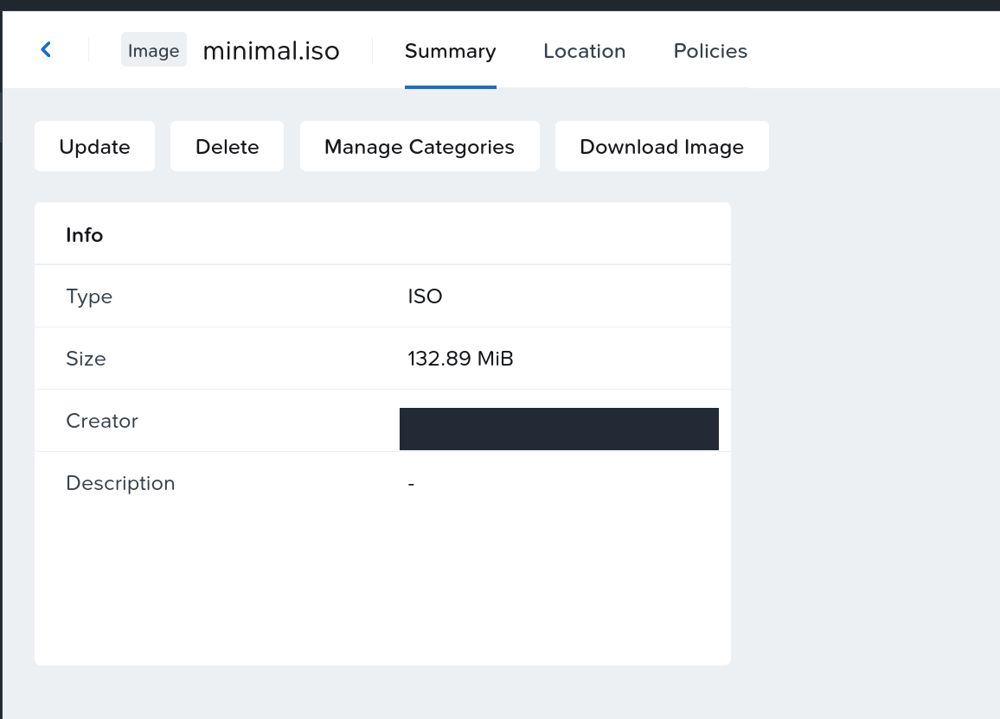
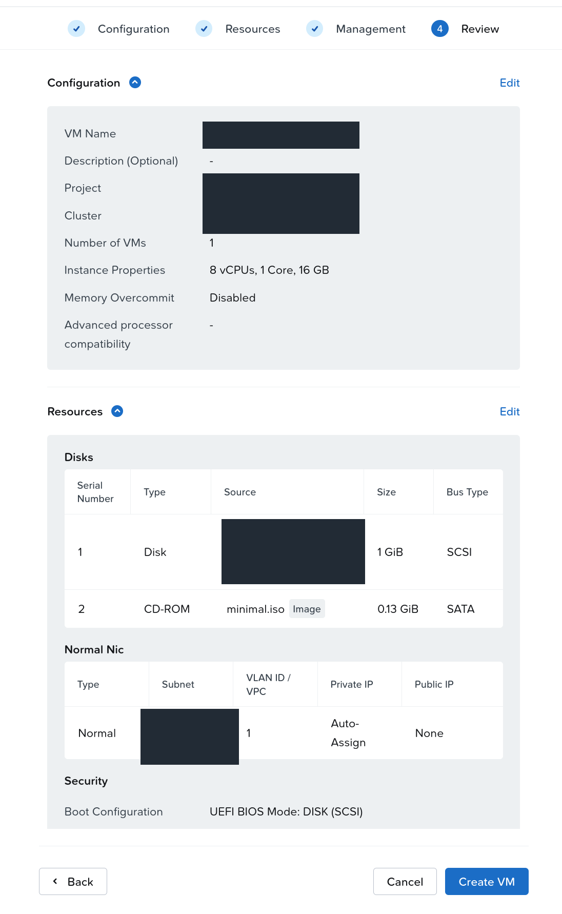
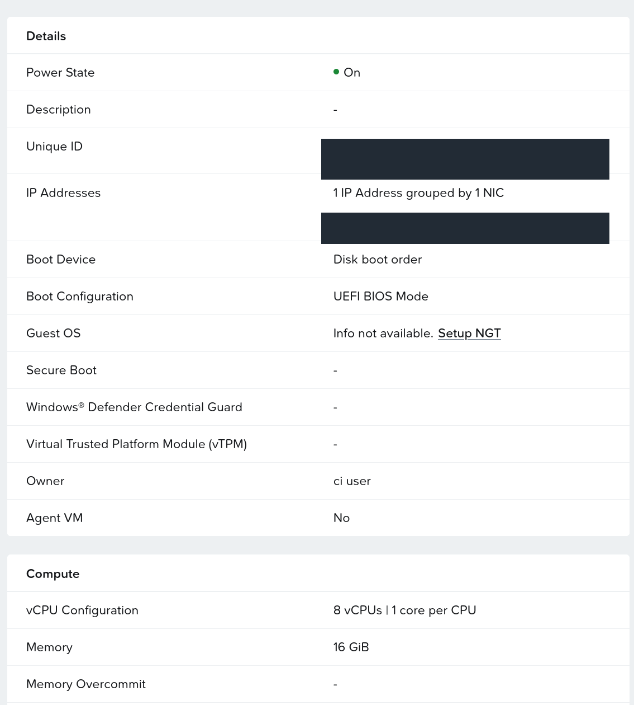

TC-014: Manual Prism provisioning
Partial
- Plan asks
- Use a separate customer-like procedure to create three Prism workers and prove Agent, NodePool and workload results.
- Implementation and result
- A modified workflow stopped after InfraEnv creation; its ISO was downloaded and uploaded to Prism. Screenshots show the ISO, VM creation and a running VM. Later captures show three installed Agents/Machines, three Ready server Pods on distinct workers and passing Pod/Service identity requests.
- Limit
- CI-created setup was reused, so the full independent customer procedure was not tested. However, this is sufficient to test the Nutanix-specific part with Image import and VM creation. The worker-0 creation screenshot shows a 1-GiB disk; it was corrected later so that the RHCOS image could be written to the disk. Specific MAC addresses were not used because the Nutanix UI for creating VMs doesn't allow specifying MAC addresses. Manual VM/Agent cleanup was verified manually.
Evidence: Manual: tc-014-manual19n1/ in evidence ZIP; three Prism screenshots.


